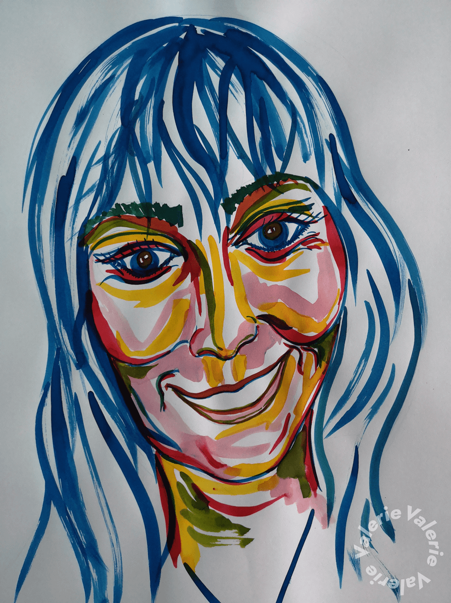
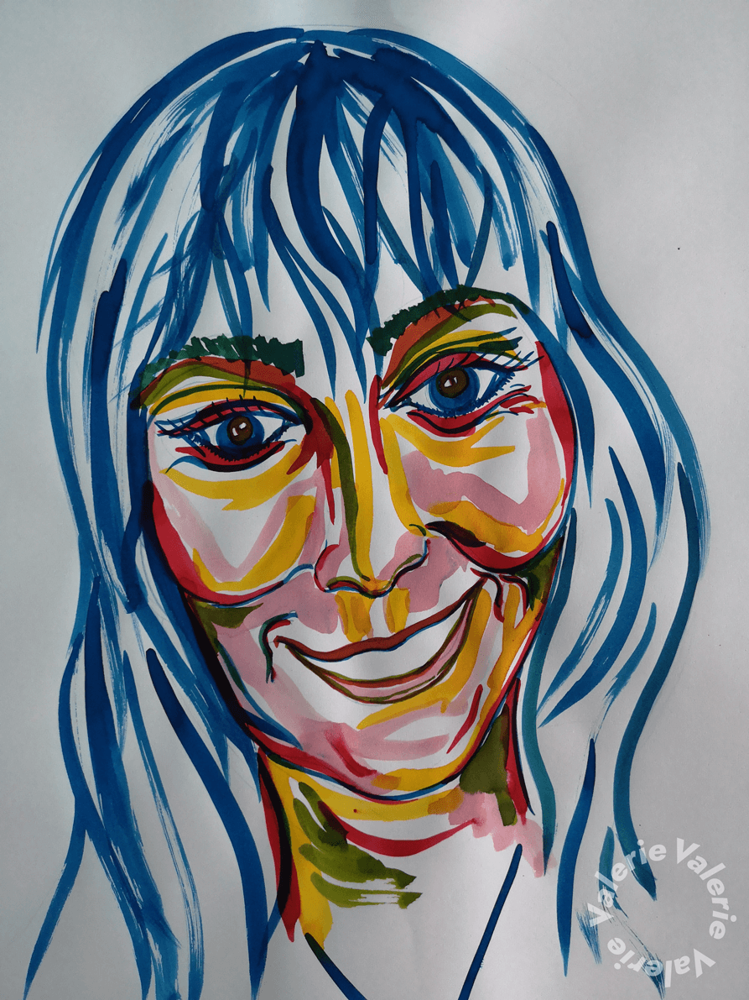

Kleur als vorm, vormen in kleur
De verscheidenheid qua vorm die door middel van het combineren van verschillende materialen tot stand komt, lokt interessante invalshoeken op. Soms ziet er men nog de afkomst in, soms vervalt het tot een soort fetisjisme, die op zijn beurt weer nieuwe vragen opwekt. Als symbolen van goddelijke energieën gevangen in een object. Is het materiaal nog belangrijk op den duur? Of komt men er juist van los? Een clash van bijvoorbeeld textiele uitingen in combinatie met keramiek wakkeren net andere gevoelens aan. Het wordt tastbaarder of zelfs aaibaarder of juist niet. Maar het speelse element primeert hierbij wel. Een “spielerei” van kleuren, gewaagd en wars van alle “white cube” conventies. Daarnaast kan een zuiver uit gepuurde vorm ook net geen spatje kleur meer verdragen en vervagen de contouren in elkaar of verrassen ze juist bij hun spel van opbouw, stapeling en combinaties. Daar was het in eerste opzet ook om te doen, als de ingenieuze met zorg opgebouwde en bepoederde kapsels uit de pruikentijd (18e). Het vergullen van iets, soms zelf stinkende zaakjes. Maar steeds de “fashion” van die periode volgend.
Ga verder